Plans in.
A model you can trust out.
Upload a 2D plan. Plan Studio measures it, builds the 3D model, pre-checks it against the NZ Building Code as you edit, keeps the working drawings in step, and turns it into stills, clips and a client presentation with real New Zealand materials.
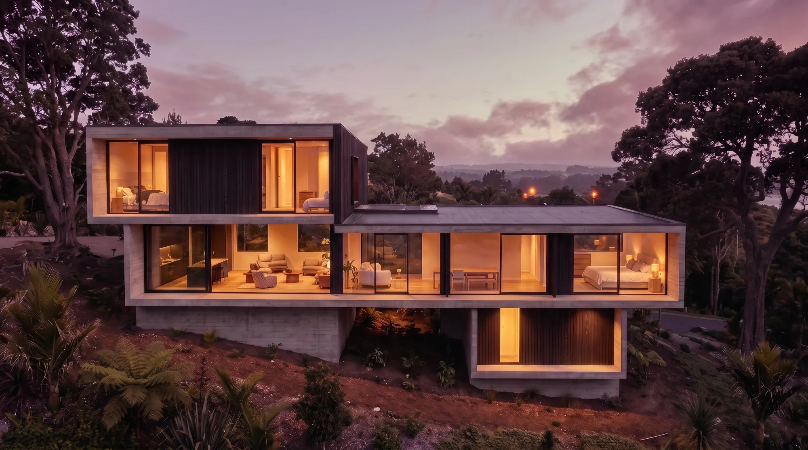
One model, from the plan to the client meeting.
Every view below comes from the same project model. Change a wall and the code check, the drawings, the renders and the presentation follow. These are real outputs from the demo hall, a fictional building.
-
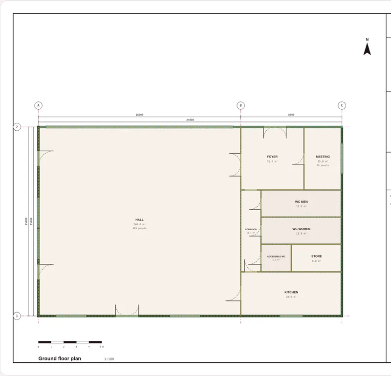
Read the plan
A CAD-exported PDF is measured from its own linework, in your browser: walls are pairs of parallel edges a wall-thickness apart, openings are the gaps, rooms come from the labels, and the scale is read off the sheet. A scan or photo is read by AI and marked inferred.
LiveEvery element carries its source and how sure we are
-
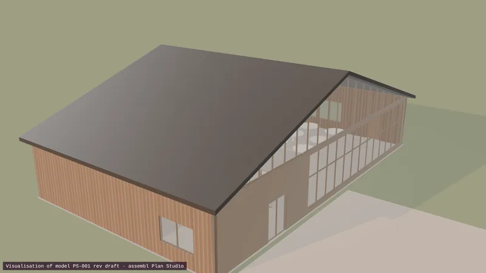
Build the model
Walls are cut around their openings, the roof follows its real pitch, decks and piles sit at their true heights. Change a material, a window or a wall in the inspector and everything downstream updates.
LiveIFC4, DXF, GLB and USDZ from the same model
-
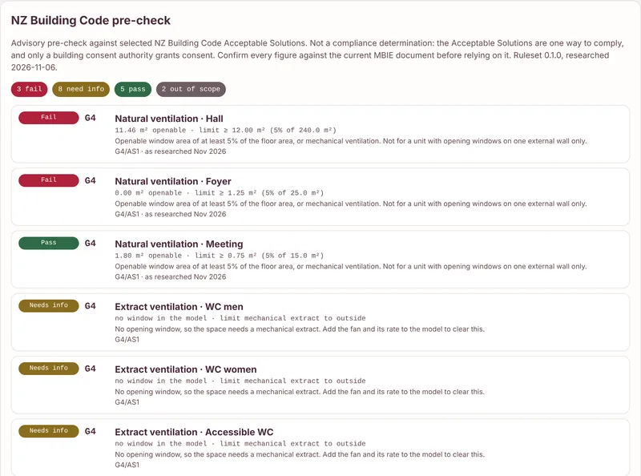
Pre-check the code, live
Deterministic rules re-run on every edit: ventilation, accessible WCs, escape routes, barriers, glazing and more, each with its clause, document, edition, the measured value and the limit. A figure not yet confirmed against the current MBIE document can never pass.
AdvisoryA pre-check, not a consent decision
-
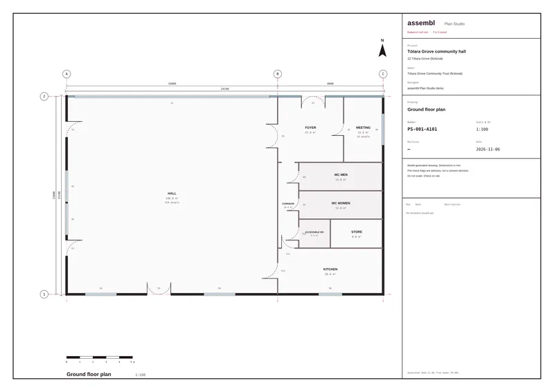
Keep the drawings in step
A3 sheets with grids, dimensions, door swings, room tags and the MBIE minimum title-block fields: plan, elevations, section and the code schedule. Issue a revision and whatever changed is clouded and listed in the revision table.
LivePDF set, SVG and DXF with CAD layers
-
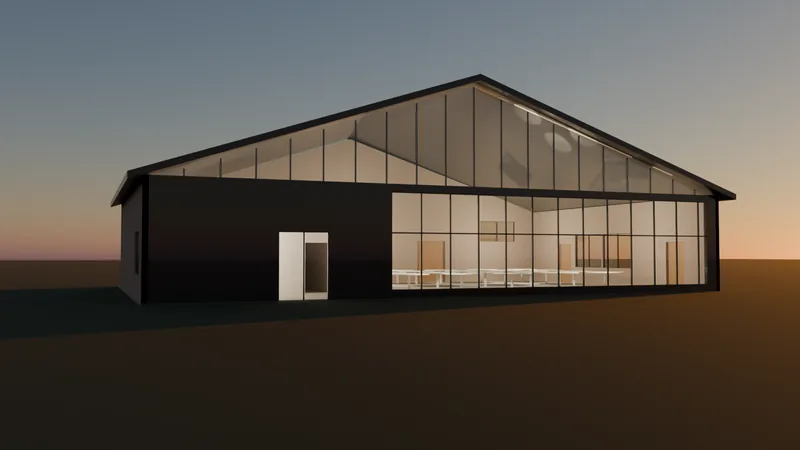
Show it in real light
Stills and flythroughs from the browser, in day, golden-hour or dusk light, at the exact size each channel needs. For hero images, the studio render pack goes to Blender for physically based light.
VisualisationEach render names the model revision it shows
-
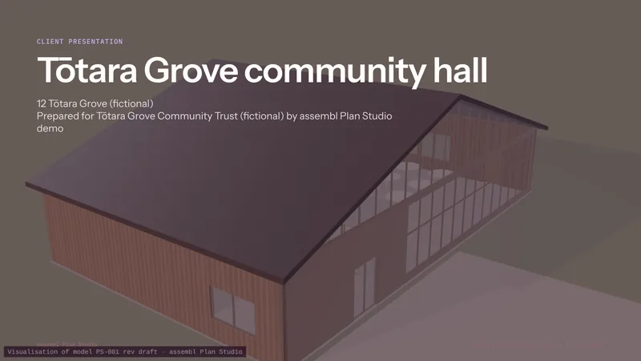
Present it to the client
A 16:9 deck built from the model: the building, the approach, the plan and elevations, a materials board with the makers' own figures, the pre-check summary and the next steps. It opens ready to print to PDF.
LiveBuilt from the model, so it never falls behind it
Measured, not guessed.
We test the reader against a plan whose true geometry we know. These are the results on the demo plan, from the test suite that runs with every change.
- Walls recovered
- 12 of 12
- Rooms recovered
- 9 of 9
- IFC4 schema issues
- 0
demo-plan.pdf · plan-studio tests
named from the plan's own labels
validated with IfcOpenShell
Every format, from one model.
Socials, client hi-res, print and CAD, all rendered from the same revision, at the exact size each one needs. A one-click view set gives the client street, corners, rear and interior in one light.
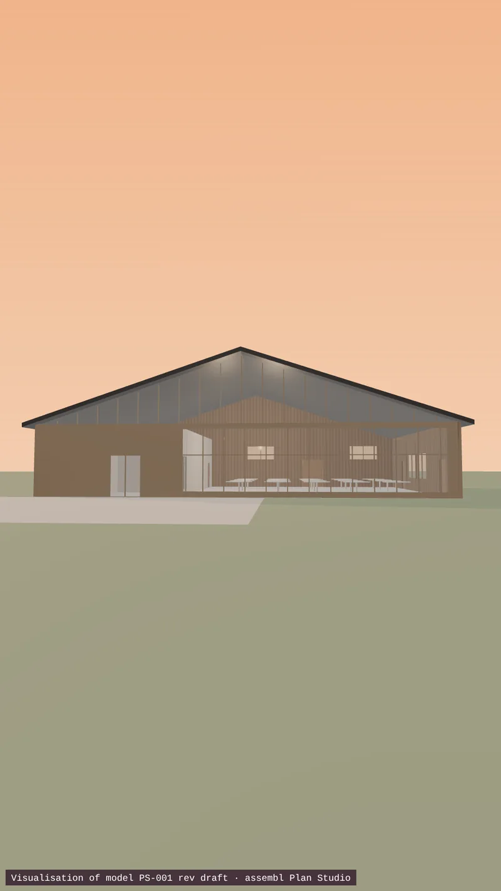
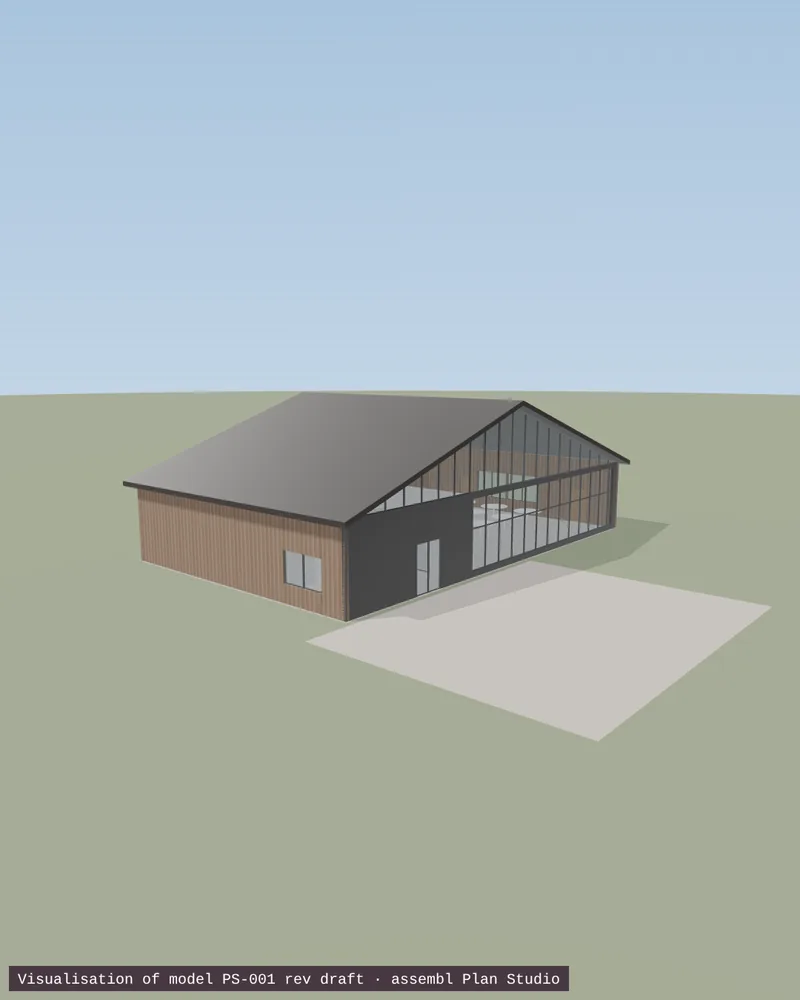
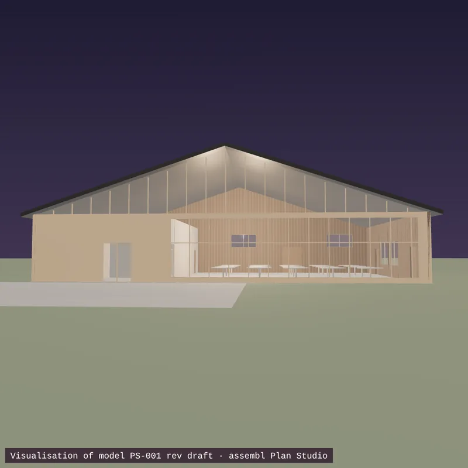
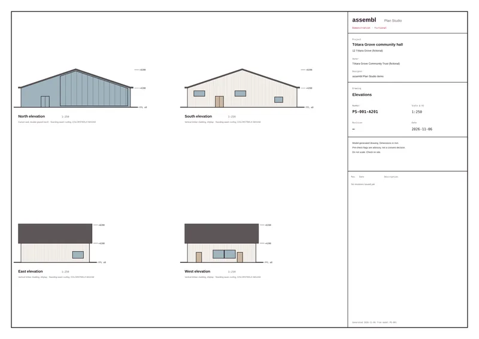
- Client 4K and print3840 × 2160 and 6000 px stills, with the model revision burned into the corner.
- Flythroughs12-second approach or orbit, recorded in your browser as MP4, in 9:16 or 16:9.
- Hero clips, when you want oneAn optional paid step: a geometry-locked clip that follows a guide recorded through the real model, labelled AI-enhanced on every frame. You see the price before anything is spent.
Real New Zealand materials.
Pick a look, then any product. We carry only what makers publish, with the source and the date we read it. Where their documents disagree, you see the range.
- COLORSTEEL® MAXAM, TitaniaLRV 68–69% · TSR 65–67%New Zealand Steel. Two of their documents differ, so both are shown.
- COLORSTEEL® MAXAM, CloudLRV 74–76% · TSR 69–72%New Zealand Steel.
- Viridian ClimaTech SuperGreen 6+12+6VLT 60% · U 1.50 W/m²K · SHGC 0.33Viridian performance data, read from an extract: check the PDF.
- Cedar board and battengeneric · select a supplierShown with its E2 cavity detail still to confirm.
Screen colours are approximate: COLORSTEEL publishes reflectance, not RGB, so choose from the physical swatch. Carving, kōwhaiwhai and tukutuku are never offered as textures: those surfaces are reserved for design with mana whenua and the artists.
Honest about what it knows.
- Advisory, never "compliant"The pre-check flags what to look at. Building consent authorities grant consent; the pre-check never says approved.
- Inferred is marked inferredAnything read by AI from a scan or photo says so, with its confidence, until a person confirms it.
- AI images say they are AIEnhanced stills and clips carry "AI-enhanced visualisation" on the image itself, and the model revision they came from.
- Your drawings stay yoursA PDF is read in your browser. Nothing is uploaded unless you choose to have AI read an image.
In pilot with Te Whare Whaihanga.
We are building Plan Studio with practising New Zealand architects, on live projects. Try it now with the demo hall, or talk to us about a pilot for your practice.